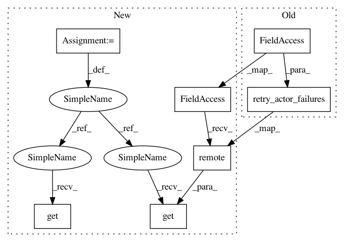

4155d5830f55dffab8200ca97c679ad69dde9358,python/ray/serve/router.py,Router,__init__,#Router#Any#,89
Before Change
await self.set_backend_config(backend, backend_config)
// -- Metric Registration -- //
[metric_exporter] = retry_actor_failures(
master_actor.get_metric_exporter)
self.metric_client = MetricClient(metric_exporter)
self.num_router_requests = self.metric_client.new_counter(
"num_router_requests",
description="Number of requests processed by the router.",
After Change
serve.init(name=instance_name)
master_actor = serve.api._get_master_actor()
traffic_policies = ray.get(master_actor.get_traffic_policies.remote())
for endpoint, traffic_policy in traffic_policies.items():
await self.set_traffic(endpoint, traffic_policy)
backend_dict = ray.get(master_actor.get_all_worker_handles.remote())
for backend_tag, replica_dict in backend_dict.items():
for replica_tag, worker in replica_dict.items():
await self.add_new_worker(backend_tag, replica_tag, worker)
backend_configs = ray.get(master_actor.get_backend_configs.remote())
for backend, backend_config in backend_configs.items():
await self.set_backend_config(backend, backend_config)
// -- Metric Registration -- //
[metric_exporter] = ray.get(master_actor.get_metric_exporter.remote())
self.metric_client = MetricClient(metric_exporter)
self.num_router_requests = self.metric_client.new_counter(
"num_router_requests",
description="Number of requests processed by the router.",
In pattern: SUPERPATTERN
Frequency: 3
Non-data size: 7
Instances
Project Name: ray-project/ray
Commit Name: 4155d5830f55dffab8200ca97c679ad69dde9358
Time: 2020-06-05
Author: ed.nmi.oakes@gmail.com
File Name: python/ray/serve/router.py
Class Name: Router
Method Name: __init__
Project Name: ray-project/ray
Commit Name: 4155d5830f55dffab8200ca97c679ad69dde9358
Time: 2020-06-05
Author: ed.nmi.oakes@gmail.com
File Name: python/ray/serve/tests/conftest.py
Class Name:
Method Name: serve_instance
Project Name: ray-project/ray
Commit Name: 4155d5830f55dffab8200ca97c679ad69dde9358
Time: 2020-06-05
Author: ed.nmi.oakes@gmail.com
File Name: python/ray/serve/router.py
Class Name: Router
Method Name: __init__
Project Name: ray-project/ray
Commit Name: f8d20d25bd4d3dd9bcfe4c332e833a400122a467
Time: 2020-06-09
Author: ed.nmi.oakes@gmail.com
File Name: ci/long_running_tests/workloads/serve_failure.py
Class Name: RandomKiller
Method Name: _get_all_serve_actors